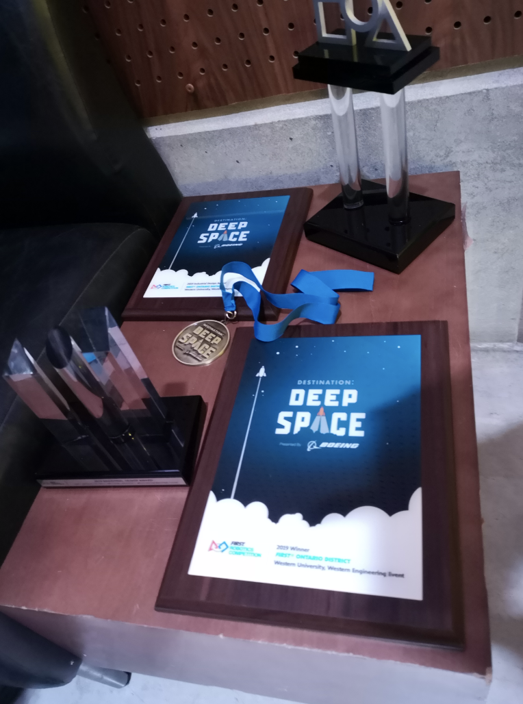

Kickoff Day at UWO
January 5, 2019
On Saturday, January 5th, Western Engineering hosted a kickoff day at Western University. Over twenty robotics teams from the London area gathered at the university to watch a live broadcast of the reveal video for this year’s game. The game is called Destination: Deep Space. For an animation of the game, click here. After the broadcast, teams dispersed to receive their robot build kits, which contained the parts for the drivetrain of the robot as well as other assorted parts that may be used on the robot. The six-week build season has officially started!
Design and Prototyping
January - February, 2019
 Once the build season had begun, our team started to meet at the university three times a week, on Wednesdays, Fridays, and Saturdays. After we had examined the game manual and rules of the game, our team began to strategize and collaborate as we started the designing process. We then tested some of our ideas by making prototypes out of wood and other reusable materials. When we had settled on designs for several of the components, we started working on the Computer Aided Design using SolidWorks, which is the software we use for all of our CAD.
Once the build season had begun, our team started to meet at the university three times a week, on Wednesdays, Fridays, and Saturdays. After we had examined the game manual and rules of the game, our team began to strategize and collaborate as we started the designing process. We then tested some of our ideas by making prototypes out of wood and other reusable materials. When we had settled on designs for several of the components, we started working on the Computer Aided Design using SolidWorks, which is the software we use for all of our CAD.
Six Busy Weeks - The Build Season
January - February, 2019
Building the robot was a team effort. While several team members were working on the robot CAD, others were placing the electronics on the drivetrain and wiring them up. In addition, our programmers worked on the code to enable the robot to be driven with an Xbox controller. When the CAD had been completed for several components, lists were made of all of the parts that needed to be cut and manufactured in our shop. Finally, we could start to assemble some of the mechanisms that we had designed and prototyped. Once certain mechanisms were assembled, we mounted them onto the robot for testing. Unfortunately, everything did not work out as planned, so back to the drawing board for some revisions. But that is all part of the learning experience.
Bag and Tag
February 19, 2019
Tuesday February 19th marked the end of the intense six-week build season.  All FIRST robotics teams had to “bag and tag” their robot by midnight. This means enclosing the robot in a large plastic bag to restrict the amount of modifications that can be done to the robot. However, one week before each tournament, teams are allowed six total hours of time to have their robot out of the bag to further modify it. Only thirty pounds of parts are allowed to be added to the robot in this time. On the last night of build season, team 4814 met at the university after everyone was done school to make a final building push before we had to bag the robot. Much of it was assembled in time for our driver to get some practice before midnight. Nevertheless, midnight snuck up on us, and we were not able to get the whole robot completely assembled and functioning as smoothly as we had hoped. So, we are not done building quite yet! We plan to assemble the last few mechanisms while the robot is still in the bag. The robot can then be taken out so that we can mount the components on it. This will hopefully be done and ready for our first tournament in Waterloo from March 21-23. It’s hard to believe that our first tournament is almost here!
All FIRST robotics teams had to “bag and tag” their robot by midnight. This means enclosing the robot in a large plastic bag to restrict the amount of modifications that can be done to the robot. However, one week before each tournament, teams are allowed six total hours of time to have their robot out of the bag to further modify it. Only thirty pounds of parts are allowed to be added to the robot in this time. On the last night of build season, team 4814 met at the university after everyone was done school to make a final building push before we had to bag the robot. Much of it was assembled in time for our driver to get some practice before midnight. Nevertheless, midnight snuck up on us, and we were not able to get the whole robot completely assembled and functioning as smoothly as we had hoped. So, we are not done building quite yet! We plan to assemble the last few mechanisms while the robot is still in the bag. The robot can then be taken out so that we can mount the components on it. This will hopefully be done and ready for our first tournament in Waterloo from March 21-23. It’s hard to believe that our first tournament is almost here!
Waterloo Regionals
March 22-24, 2019
It's now time for our first competition of the season. Our first competition was at the University of Waterloo in Waterloo, Ontario.

At this point it may be useful to describe how FRC Tournaments are generally structured. There are two main rounds - Qualifications and Playoffs - that robots compete in. Qualifications usually lasts for the first few days, and Playoffs takes place after Alliance Selection on the morning of the last day.
Each year, the game requires 3 robots on what is called an "Alliance" to play. Two alliances compete against each other in a match, identifiable by their bumper colors, which are randomly determined. Alliances in Qualification matches are also randomly generated, and consist of alliances of 3 robots each in the Qualification round. Depending on which alliance wins or loses, and the completion of other tasks within the game, all the robots on that alliance gain "Ranking Points," and teams with more ranking points are ranked higher on the leaderboard than teams with fewer.
After that, the top 8 ranked teams after Qualifications become "Alliance Captains" and get the chance to pick alliances. They can each pick 2 other teams in a serpentine draft: first, the teams ranked 1 through 8 pick one other team to be on their alliance, and alliances pick their second teams starting at 8 and ending at 1. A team can pick any alliance below them, including ones ranked in the top 8 (thus, if Team #1 picks Team #2 and Team #2 accepts, Teams 1 and 2 form "Alliance 1" and Team #3 becomes the new Team #2). In Playoffs, these alliances are paired against each other and play matches against each other to determine who proceeds to the next round.
They can each pick 2 other teams in a serpentine draft: first, the teams ranked 1 through 8 pick one other team to be on their alliance, and alliances pick their second teams starting at 8 and ending at 1. A team can pick any alliance below them, including ones ranked in the top 8 (thus, if Team #1 picks Team #2 and Team #2 accepts, Teams 1 and 2 form "Alliance 1" and Team #3 becomes the new Team #2). In Playoffs, these alliances are paired against each other and play matches against each other to determine who proceeds to the next round.
Depending on the team's rank in both rounds, they are then ranked provincially and the teams above a certain rank provincially all qualify for FRC Provincials, to be held in Mississauga. There are also other awards and distinctions that can be won based on what the judges think of our robot and team, and these also increase the chances of proceeding to Provincials.
Team 4814 performed well at Waterloo, placing Rank 21 at the end of the Qualification Rounds. We were picked for 8th Alliance in the Playoffs and made it to the Quarterfinals.
Western Regionals
April 5-7, 2019
Our second competition took place at the University of Western Ontario. Taking the knowledge and experience we gained from Team 4814's performanced managed to exceed our previous results by placing Rank 5 at the end of the Qualification Rounds. We became District Championship Winners! Additionally, we won the Industrial Design Award sponsored by General Motors in recognition of efficient and effective design aspects of our robot. With these distinctions, Team 4814 has qualified for the FIRST Ontario Provincial Championships, which will take place from April 10-13!
FIRST Ontario Provincial Championships
April 10-13, 2019
From April 10-13, Team 4814 was at the Ontario Provincial Championships held at the Hershey Centre in Mississauga. We were selected for the 2nd Alliance